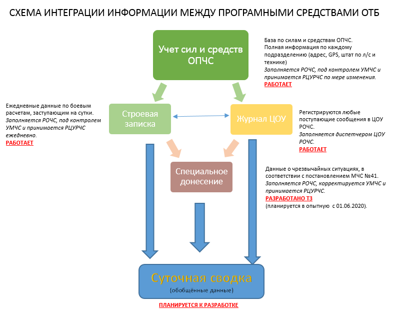
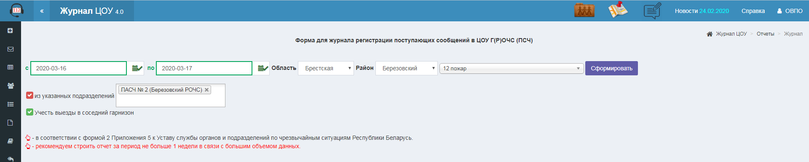
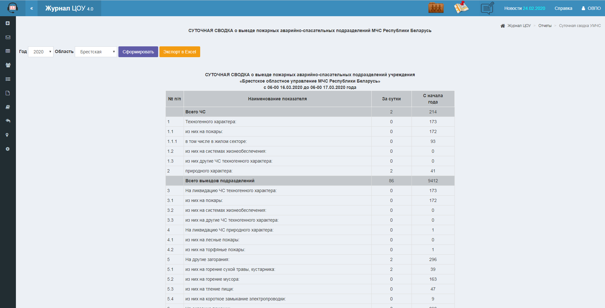
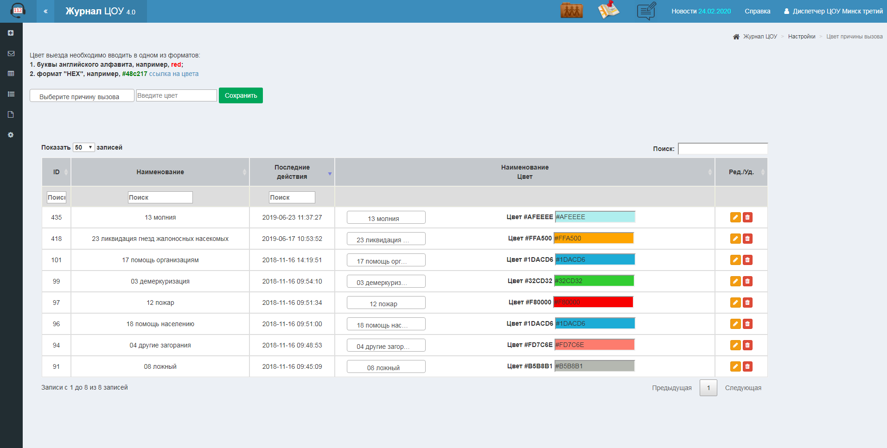
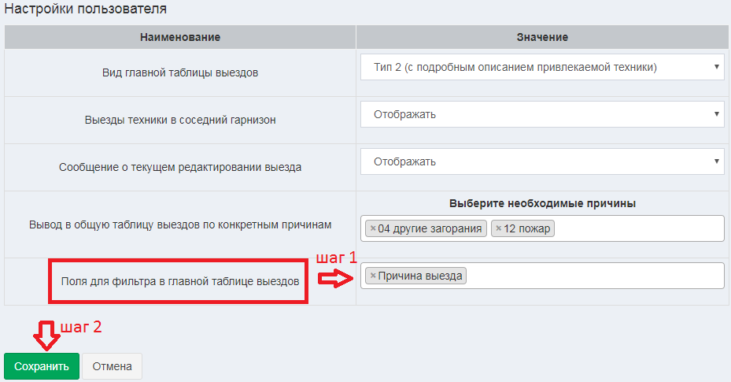

Минск, РЦУРЧС © 2020
Создано: 20/03/2020
Последнее обновление: 14/05/2020
Подразделение: ОВПО РЦУРЧС
Телефон: 8-017-209-27-51
Данное руководство создано для облегчения работы с программным средством "Журнал ЦОУ". Если у Вас возникли вопросы или предложения, пожалуйста, используйте следующую форму для связи с нами.

В программном средстве "Журнал ЦОУ" используются следующие классификаторы (дерево всех позиций расположено ниже):
1. Причина выезда и виды работ.
2. Причина пожара.
3. Службы.
4. Ведомственная принадлежность.
5. Список лиц (для модуля "Информирование").
6. Список ПАСП.
Классификаторы 1-4 администрируются на уровне ОВПО РЦУРЧС.
Классификаторы 5-6 могут заполняться на уровне Г(Р)ОЧС.
- 1. Причины и виды выездов
- 01 выезд в соседний гарнизон
- возврат в пути, работы не проводились
- ликвидация ЧС
- оказание помощи населению
- оказание помощи организации
- проведение АСР
- служебный
- сработка молнии
- тушение других загораний
- тушение пожара в соседнем гарнизоне
- 02 дежурство
- дежурство на мероприятии
- дежурство на объекте
- дежурство по обеспечению ПБ
- дежурство при обнаружении подозрительного взрывоопасного предмета
- дозор
- мониторинг тепловых аномалий
- 03 демеркуризация
- замеры ПДК
- обезвреживание отходов
- сбор ртути
- удаление ртути
- дозор
- мониторинг тепловых аномалий
- 04 другие загорания
- вспышка без последующего горения
- горение стерни
- горение ТБО
- загорание ТС в движении
- контролируемое горение (костер, мангал, порубочные остатки)
- короткое замыкание электропроводки
- мусор
- мусор контролируемое сжигание
- пища на газ. плите
- пища на эл. плите
- самосожжение
- 05 занятия
- другие занятия
- занятия ГСВ
- занятия на водах
- занятия ПАСП
- занятия со специализированными службами
- занятия ФП
- ОППП (занятия ГДЗС)
- отработка вводной
- отработка ОП и ОК
- проверка боеготовности
- ТДК (занятия ГДЗС)
- ТСЗ
- ТСП
- ТСУ
- участие в соревнованиях
- 06 заправка
- заправка АСВ
- заправка водой
- заправка воздухом
- заправка ГСМ
- заправка огнетушащим порошком
- заправка пенообразователем
- 07 контроль сварочных и огневых работ
- контроль налива
- контроль огневых работ
- контроль сварочных работ
- 08 ложный
- ложный выезд
- 09 ЧС
- авария
- деблокировка погибшего
- деблокировка пострадавшего
- другие ЧС техногенного характера
- другое
- ДТП
- ликвидация последствий паводка
- ликвидация последствий розлива (выброса) СДЯВ
- ликвидация последствий розлива нефтепродуктов
- на системах жизнеобеспечения
- природного характера
- техногенного характера
- 10 передислокация
- передислокация в пределах гарнизона
- передислокация за пределы гарнизона
- передислокация на службы взаимодействия
- 11 платные услуги
- буксировка
- другие платные услуги
- извлечение животных из вентиляционных шахт
- извлечение транспортных средств
- испытание ограждений, оборудования
- испытания пожарных гидрантов
- обеспечение пожарной безопасности
- обустройство территории
- охрана комбайнов
- платная помощь населению
- платная помощь организациям
- погрузочно-разгрузочные работы
- помывка зданий, сооружений и дорожного покрытия
- проведение наружных высотных работ на зданиях, сооружениях
- ликвидация гнезд жалоносных насекомых
- проведение подводно-технических водолазных работ
- проверка ППВ
- промывка канализаций
- разборка зданий и сооружений
- сопровождение и мойка сельскохозяйственной техники
- 12 пожар
- на объекте
- на сооружении
- на транспорте
- 13 молния
- сработка молнии
- 14 хоз. работы
- хозяйственные работы
- 15 другие сигнализации
- ПДЗ
- сработка сигнализации
- 16 испытания ПТВ
- испытания оборудования
- испытания рукавов
- 17 помощь организациям
- буксировка авто
- взаимодействие с другими организациями
- деблокировка погибшего
- деблокировка пострадавшего
- другое
- замеры ПДК
- извлечение предмета
- извлечение человека
- освобождение зажатых частей тела (снятие колец и предметов)
- откачка воды
- открывание дверей
- перенос человека
- помощь 102 (МВД)
- помощь 102,103
- помощь 103
- помощь 104
- помощь ГАИ
- помощь горгаз
- помощь ЖКХ
- проведение акции
- проведение высотных работ
- ликвидация гнезд жалоносных насекомых
- проверка ППВ
- охрана комбайнов
- работы на акватории
- распиловка аварийных деревьев
- следственный эксперимент
- снос (поднятие), транспортировка людей
- шоринг
- 18 помощь населению
- анализ газовоздушной среды
- буксировка транспорта
- деблокировка погибшего
- деблокировка пострадавшего
- другое
- замеры ПДК
- извлечение животного
- извлечение предмета
- извлечение человека
- не оказывалась
- освобождение зажатых частей тела (снятие колец и предметов)
- откачка воды
- открывание дверей
- отлов пресмыкающихся
- перенос человека
- подача электроэнергии
- ликвидация гнезд жалоносных насекомых
- охрана комбайнов
- подвоз воды
- проверка ППВ
- поиск потерявшегося
- работы по предотвращению суицида
- работы по шорингу
- разборка завалов, уборка аварийных деревьев
- спуск с высоты
- 19 ремонт, ТО
- ремонт
- техосмотр
- ТО
- ТО-1
- ТО-2
- 20 служебный
- буксировка транспорта на ремонт, ТО
- доставка оборудования
- подписание документов
- получение оборудования
- получение путевых листов
- помощь сотруднику
- проверка больных на дому
- проверка подразделений
- проверка ПФС
- работа на фасаде
- смена л/с
- списание техники
- 21 ЕДДС
- другое
- переадресация в 102
- переадресация в 103
- переадресация в 104
- переадресация в ЖКХ
- переадресация в РЭС
- 22 ЛТТ
- кустарник
- лес
- торф
- трава
- 23 ликвидация гнезд жалоносных насекомых
- дезинсекция
- ликвидация
- на платной основе
- помощь населению
- помощь организациям
- 24 уборочная кампания
- для других целей
- на безвозмездной основе
- на платной основе
- охрана комбайнов на безвозмездной основе
- охрана комбайнов на платной основе
- перевозка зерна на безвозмездной основе
- перевозка зерна на платной основе
- ремонтные работы на безвозмездной основе
- ремонтные работы на платной основе
- сопровождение комбайнов на безвозмездной основе
- сопровождение комбайнов на платной основе
- 25 проверка ППВ
- проверка ППВ
2. Причины пожара
- поджог
- нарушение технологического регламента (процесса)
- взрыв
- нарушение ПТ при проведении огневых работ
- механическое разрушение узлов и деталей и т.д.
- нарушение правил хранения, использования, изготовления и транспортировки веществ и материалов
- нарушение правил эксплуатации газовых устройств и агрегатов
- нарушение правил монтажа и устройства электросетей и электрооборудования
- конструктивный недостаток электрооборудования
- нарушение правил устройства и монтажа печей, теплогенерирующих агрегатов и устройств
- нарушение правил эксплуатации печей, теплогенерирующих агрегатов и устройств
- конструктивный недостаток теплогенерирующих агрегатов и устройств
- конструктивный недостаток изделия, устройства
- неосторожное обращение с огнем
- шалость детей с огнем
- проявление сил природы
- прочие причины
- неустановленные причины
- столкновение автомобилей (авария на транспорте)
- нарушение правил эксплуатации электросетей и электрооборудования
- неосторожное обращение с огнем при выжигании сухой растительности, травы на корню
- нарушение правил эксплуатации пиротехнического изделия
- конструктивный недостаток пиротехнического изделия
3. Службы
- Белорусское общество Красного Креста
- Скорая медицинская помощь
- РОВД
- КГБ
- МВД
- Мингаз
- ЖКХ
- РЭС
- ОСВОД
- водоканал
- Аварийная электросети
- Другие
- ГИМС
- ГАИ
4. Ведомственная принадлежность
- Государственный
- Другое
- ЖЭУ
- Смешанный
- Частный
5. Список лиц
- начальник РОСН полковник Иванов И.И. (пример)
- заместитель начальника РОСН подполковник Сидоров С.С. (пример)
- заместитель начальника РОСН капитан Бескоровайный Н.С. (пример)
6. Список ПАСП
- ПАСЧ №11, г. Минск, ул. Светлая 1 (пример)
- ПАСЧ №21, г. Минск, ул. Светлая 2 (пример)
- ПАСЧ №31, г. Минск, ул. Светлая 3 (пример)
Форма № 1 (базовые параметры)
Форма № 2 (Раздел 1. Боевая работа по ликвидации пожаров)
Форма № 3 (Раздел 2. Боевая работа по ликвидации ЧС)
Форма № 4 (Раздел 3. Общие сведения)
| # | Наименование показателя | Описание |
|---|---|---|
| Раздел 1. Боевая работа по ликвидации пожаров | ||
| 1. | Всего ликвидировано пожаров ПАСП МЧС, в том числе не подлежащих учету (сумма строк 1.1.-1.5.) | сумма позиций 1.1.-1.5. |
| 1.1. | на объектах, сооружениях и транспорте в городах и сельской местности (сумма строк 1.1.1.-1.1.3), из них: | все выезды с причиной выезда "Пожар" и выбранными видами работ "на объектах", "на сооружениях", "на транспорте" |
| 1.1.1. | в городах областного подчинения (г. Минске) | все выезды из пункта 1.1, у которых указаны в позиции "Населенный пункт" города областного подчинения или г.Минск |
| 1.1.2. | в городах районного подчинения (поселки городского типа) | все выезды из пункта 1.1, у которых указаны в позиции "Населенный пункт" города районного подчинения и поселки городского типа |
| 1.1.3. | в сельских населенных пунктах (агрогородках, поселках, деревнях и т.д.) | разница между 1.1. - 1.1.1. - 1.1.2. |
| 1.2. | в лесах | все выезды с причиной "ЛТТ" и видом работ "лес" |
| 1.3. | на торфяниках | все выезды с причиной "ЛТТ" и видом работ "торф" |
| 1.4. | горение сухой растительности, кустарника и т.п. | все выезды с причиной "ЛТТ" и видами работ "трава/кустарник" |
| 1.5. | загорание мусора, пищи и т.п. | все выезды с причиной "Другие загорания" |
| 2. | Пожары ликвидированы (по пожарам на объектах, сооружениях и транспорте в городах и сельской местности) | сумма уникальных выездов по позициям 2.1.+2.2.+2.3.+2.4.+2.5.+2.6.+2.7. (так как у одного и того же выезда на пожар может быть выбрано несколько позиций одновременно) |
| 2.1. | населением, работающими до прибытия подразделений МЧС | количество выездов на пожар, где установлен данный чек-бокс |
| 2.2. | ведомственными и добровольными пожарными формированиями до прибытия подразделений МЧС (в том числе с использованием пожарной техники) | количество выездов на пожар, где установлен данный чек-бокс |
| 2.3. | силами одного отделения | количество выездов на пожар, где установлен данный чек-бокс |
| 2.4. | силами одной смены | количество выездов на пожар, где установлен данный чек-бокс |
| 2.5. | с привлечением дополнительных сил МЧС | количество выездов на пожар, где установлен данный чек-бокс |
| 2.6. | без установки пожарных аварийно-спасательных автомобилей на водоисточник (водоем, ПГ и т.п.) | количество выездов на пожар, где установлен данный чек-бокс |
| 2.7. | с установкой пожарных аварийно-спасательных автомобилей на водоисточник (водоем, ПГ и т.п.) | количество выездов на пожар, где установлен данный чек-бокс |
| 3. | При тушении использовались: | |
| 3.1. | один водяной ствол | количество выездов на пожар, где применялись стволы |
| 3.2. | два водяных ствола | количество выездов на пожар, где применялись стволы |
| 3.3. | три - четыре водяных ствола | количество выездов на пожар, где применялись стволы |
| 3.4. | пять и более водяных стволов | количество выездов на пожар, где применялись стволы |
| 3.5. | стволы высокого давления | количество выездов на пожар, где применялись стволы |
| 3.6. | один ГПС (СВП) | количество выездов на пожар, где применялись стволы ГПС-600 или СВП |
| 3.6.1. | израсходовано пенообразователя, тонн | сумма тонн израсходованного пенообразователя, где использовался один ствол ГПС-600 или СВП (причина выезда "12 пожар") |
| 3.7. | два и более ГПС (СВП) | количество выездов на пожар, где применялись стволы ГПС-600 или СВП |
| 3.7.1. | израсходовано пенообразователя, тонн | сумма тонн израсходованного пенообразователя, где использовались два и более стволов ГПС-600 или СВП (причина выезда "12 пожар") |
| 3.8. | переносные порошковые огнетушители | количество выездов на пожар, где использовались переносные порошковые огнетушители (форма 2 по боевой работе) |
| 3.8.1. | израсходовано порошка, тонн | сумма тонн израсходованного порошка (форма 2 по боевой работе) |
| 3.9. | аварийно-спасательный и механизированный инструмент (сумма строк 3.9.1.-3.9.3), из них: | сумма строк 3.9.1.-3.9.3. |
| 3.9.1. | механизированный (бензоинструмент, электроинструмент и т.п.) | количество использованного инструмента на пожаре (форма 2 по боевой работе) |
| 3.9.2. | пневматический аварийно-спасательный инструмент (домкраты, пневмоподушки и т.п.) | количество использованного инструмента на пожаре (форма 2 по боевой работе) |
| 3.9.3. | гидравлический аварийно-спасательный инструмент (ножницы, кусачки, разжим и т.п.) | количество использованного инструмента на пожаре (форма 2 по боевой работе) |
| 3.10. | автомобили быстрого реагирования | количество таких единиц техники на пожаре |
| 3.11. | пожарные автоцистерны | количество таких единиц техники на пожаре |
| 3.12. | автолестницы и коленчатые подъемники | количество таких единиц техники на пожаре |
| 3.13. | автомобили дымоудаления | количество таких единиц техники на пожаре |
| 3.14. | пожарные насосные станции | количество таких единиц техники на пожаре |
| 3.15. | рукавные автомобили | количество таких единиц техники на пожаре |
| 3.16. | автомобили связи и освещения | количество таких единиц техники на пожаре |
| 3.17. | автомобили ГДЗС | количество таких единиц техники на пожаре |
| 3.18. | автомобили пенного тушения | количество таких единиц техники на пожаре |
| 3.19. | автомобили порошкового, комбинированного тушения | количество таких единиц техники на пожаре |
| 3.20. | автомобили газоводяного тушения | количество таких единиц техники на пожаре |
| 3.21. | штабные автомобили | количество таких единиц техники на пожаре |
| 3.22. | воздухозаправщики (воздухохранилища) | количество таких единиц техники на пожаре |
| 3.23. | аварийно-спасательные автомобили | количество таких единиц техники на пожаре |
| 3.24. | автомобиль медицинской службы | количество таких единиц техники на пожаре |
| 3.25. | авиационная техника | количество привлеченной авиационной техники на пожаре (форма 2 по боевой работе) |
| 3.26. | другая техника МЧС | количество выездов на пожар, где установлен данный чек-бокс |
| 3.27. | одно звено ГДЗС | количество выездов на пожар, где установлен данный чек-бокс |
| 3.28. | два и более звеньев ГДЗС | количество выездов на пожар, где установлен данный чек-бокс |
| 4. | Результаты боевой работы на пожарах: | |
| 4.1. | спасено людей: | сумма спасенных людей на пожарах (форма 1 по боевой работе) |
| 4.1.1. | в том числе с применением дополнительных масок | количество спасенных людей на пожарах с применением масок (форма 2 по боевой работе) |
| 4.1.2. | в том числе детей | сумма спасенных детей на пожарах (форма 1 по боевой работе) |
| 4.2. | эвакуировано людей: | сумма эвакуированных людей на пожарах (форма 1 по боевой работе) |
| 4.2.1. | в том числе детей | сумма эвакуированных детей на пожарах (форма 1 по боевой работе) |
| 4.3. | спасено голов скота | сумма спасенных голов скота на пожарах (форма 1 по боевой работе) |
| 4.4. | предотвращено уничтожение кормов и технических культур (тонн) | сумма спасенных тонн кормов (форма 1 по боевой работе) |
| 4.5. | предотвращено уничтожение огнем строений | сумма спасенных строений (форма 2 по боевой работе) |
| 4.6. | предотвращено уничтожение огнем единиц техники | сумма спасенных единиц техники (форма 2 по боевой работе) |
| Раздел II. Боевая работа по ликвидации чрезвычайных ситуациях и последствий от них | ||
| 1. | Количество выездов ПАСП МЧС на ликвидацию чрезвычайных ситуаций и последствий от них (сумма строк 1.1 - 1.2): | сумма позиций 1.1.-1.2. |
| 1.1. | количество выездов ПАСП МЧС на ликвидацию ЧС техногенного характера и последствий от них (без учета пожаров) | количество выездов с причиной "ЧС" и видами работ "техногенного характера/на системах обеспечения/другие ЧС техногенного характера" |
| 1.2. | количество выездов ПАСП МЧС на ликвидацию ЧС природного характера и последствий от них (без учета пожаров в природных экосистемах) | количество выездов с причиной "ЧС" и видом работ "природного характера" |
| 2. | Результаты боевой работы на ЧС: | |
| 2.1. | спасено людей: | сумма спасенных людей на ЧС (форма 1 по боевой работе) |
| 2.1.1. | в том числе детей | сумма спасенных детей на ЧС (форма 1 по боевой работе) |
| 2.2. | эвакуировано людей: | сумма эвакуированных людей на ЧС (форма 1 по боевой работе) |
| 2.2.1. | в том числе детей | сумма эвакуированных детей на ЧС (форма 1 по боевой работе) |
| 2.3. | спасено голов скота | сумма спасенных голов скота на ЧС (форма 1 по боевой работе) |
| 2.4. | предотвращено уничтожение строений | сумма спасенных строений на ЧС (форма 3 по боевой работе) |
| 2.5. | предотвращено уничтожение единиц техники | сумма спасенных единиц техники на ЧС (форма 3 по боевой работе) |
| 3. | При ликвидации использовались: | |
| 3.1. | Автомобили основного назначения, в том числе: | |
| 3.1.1. | автомобили быстрого реагирования | количество таких единиц техники на ЧС |
| 3.1.2. | пожарные автоцистерны | количество таких единиц техники на ЧС |
| 3.2. | Автомобили специального назначения, в том числе: | |
| 3.2.1. | аварийно-спасательные автомобили | количество таких единиц техники на ЧС |
| 3.2.2. | автомобили службы химической и радиационной защиты (прицепы) | количество таких единиц техники на ЧС |
| 3.2.3. | автомобиль службы водолазно-спасательных работ (прицепы) | количество таких единиц техники на ЧС |
| 3.2.4. | автомобиль медицинской службы | количество таких единиц техники на ЧС |
| 3.2.5. | автомобили связи и освещения | количество таких единиц техники на ЧС |
| 3.2.6. | автолестницы и коленчатые подъемники | количество таких единиц техники на ЧС |
| 3.2.7. | штабные автомобили | количество таких единиц техники на ЧС |
| 3.3. | Автомобили инженерного назначения, в том числе: | |
| 3.3.1. | автомобильные краны | количество таких единиц техники на ЧС |
| 3.3.2. | передвижные электростанции (электрогенераторы) | количество таких единиц техники на ЧС |
| 3.4. | Вспомогательные автомобили МЧС (топливозаправщики, МТО АТ, медпомощь и др.) | количество таких единиц техники на ЧС |
| 3.5. | авиационная техника | количество привлеченной авиационной техники на ЧС (форма 3 по боевой работе) |
| 3.6. | аварийно-спасательный и механизированный инструмент, из них: | сумма строк 3.6.1.-3.6.3. |
| 3.6.1. | механизированный (бензоинструмент, электроинструмент и т.п.) | количество использованного инструмента на пожаре (форма 3 по боевой работе) |
| 3.6.2. | пневматический аварийно-спасательный инструмент (домкраты, пневмоподушки и т.п.) | количество использованного инструмента на пожаре (форма 3 по боевой работе) |
| 3.6.3. | гидравлический аварийно-спасательный инструмент (ножницы, кусачки, разжим и т.п.) | количество использованного инструмента на пожаре (форма 3 по боевой работе) |
| Раздел III. Другие выезды | ||
| 1. | Другие выезды (сумма строк 1.1. - 1.9.) | сумма строк 1.1.-1.9. |
| 1.1. | на сработку сигнализации | причина выезда "Другие сигнализации" + причина выезда "Молния" |
| 1.1.1. | из них на сработку СПИоЧС "Молния" | причина выезда "Молния" |
| 1.2. | ложные | причина выезда "Ложный" |
| 1.3. | помощь населению, организациям | причина выезда "Помощь населению" + причина выезда "Помощь организациям" |
| 1.4. | на проведение демеркуризационных работ/на розлив ртути (ртутьсодержащих отходов) | причина выезда "Демеркуризация" |
| 1.4.1. | собрано ртути, кг | количество ртути в килограммах (форма 4 по боевой работе) |
| 1.4.2. | собрано ртутьсодержащих отходов, кг | количество ртутьсодержащих отходов в килограммах (форма 4 по боевой работе) |
| 1.5. | на проведение работ при ликвидации последствий ДТП | количество выездов, где есть пострадавшие при ДТП (форма 4 по боевой работе) |
| 1.5.1. | спасено людей | спасено людей при ДТП (форма 4 по боевой работе) |
| 1.5.2. | в том числе детей | спасено детей при ДТП (форма 4 по боевой работе) |
| 1.5.3. | деблокировано погибших | деблокировано погибших (форма 4 по боевой работе) |
| 1.6. | на проведение работ на акваториях водоемов | количество выездов, где есть пострадавшие на водоемах (форма 4 по боевой работе) |
| 1.6.1. | спасено людей | спасено людей на водоемах (форма 4 по боевой работе) |
| 1.6.2. | в том числе детей | спасено детей на водоемах (форма 4 по боевой работе) |
| 1.6.3. | деблокировано погибших | извлечено погибших на водоемах (форма 4 по боевой работе) |
| 1.7. | на проведение работ по уничтожению гнезд жалоносных насекомых | количество выездов (!!! без анализа причины выезда "23 ликвидация гнезд жалоносных насекомых" !!!) из пунктов 1.7.1+1.7.2. |
| 1.7.1. | на безвозмездной основе в: | количество уникальных выездов, где выбрано на безвозмездной основе (1.7.1.) и при этом выбран хотя бы один из пунктов 1.7.1.1., 1.7.1.2., 1.7.1.3. (форма 4 по боевой работе) |
| 1.7.1.1. | случаях наличия прямой угрозы жизни и здоровью людей | количество выездов с выбранным чек-боксом и выбранным пунктом 1.7.1. (форма 4 по боевой работе) |
| 1.7.1.2. | дошкольных учреждениях, домах престарелых и инвалидов, больницах, спальных корпусах школ-интернатов и детских учреждений (класс Ф 1.1. согласно ТКП 45-2.02-315-2018) | количество выездов с выбранным чек-боксом и выбранным пунктом 1.7.1. (форма 4 по боевой работе) |
| 1.7.1.3. | школах и внешкольных учебных заведениях, средних специальных учебных заведениях, профессионально-технических училищах (класс Ф 4.1. согласно ТКП 45-2.02-315-2018) | количество выездов с выбранным чек-боксом и выбранным пунктом 1.7.1. (форма 4 по боевой работе) |
| 1.7.2. | на платной основе: | количество уникальных выездов, где выбрано на платной основе (1.7.2.) и при этом выбран хотя бы один из пунктов 1.7.2.1., 1.7.2.2. (форма 4 по боевой работе) |
| 1.7.2.1. | объекты находящиеся в личной собственности граждан | количество выездов с выбранным чек-боксом и выбранным пунктом 1.7.2. (форма 4 по боевой работе) |
| 1.7.2.2. | организации по ранее заключенным договорам | количество выездов с выбранным чек-боксом и выбранным пунктом 1.7.2. (форма 4 по боевой работе) |
| 1.8. | на ликвидацию последствий паводка (без учета ЧС природного характера) | причина выезда "ЧС" вид работ "ликвидация последствий паводка" |
| 1.9. | на прочие: | причины выезда "контроль сварочных и огневых работ", "дежурство", "хоз.работы", "заправка" (виды работ: заправка АСВ, заправка ГСМ), "передислокация", "ремонт, ТО (виды работ: ТО-1, ТО-2)", "выезд в сосдений гарнизон", "испытания ПТВ", "платные услуги", "уборочная кампания" |
| 1.9.1. | контроль за проведением огневых работ, дозоры | причина выезда "Контроль за проведением огневых и сварочных работ" |
| 1.9.2. | дежурство по обеспечению пожарной безопасности и взаимодействие с другими службами | причина выезда "дежурство" |
| 1.9.3. | хозяйственные работы | причина выезда "хозяйственные работы" |
| 1.9.4. | заправка ГСМ, АСВ | причина выезда "заправка" виды работ "ГСМ/АСВ" |
| 1.9.5. | передислокация | причина выезда "передислокация" |
| 1.9.6. | ТО-1, ТО-2, ремонт | причина выезда "ремонт" виды работ "ремонт/ТО-1/ТО-2" |
| 1.9.7. | выезд в соседний гарнизон для ликвидации ЧС | причина выезда "выезд в соседний гарнизон" |
| 1.9.8. | испытание ПТВ | причина выезда "испытания ПТВ" |
| 1.9.9. | платные услуги | причина выезда "платные услуги" |
| 1.9.10. | другие | причина выезда "уборочная кампания" |
| 2. | Спасено людей в иных случаях: | сумма позиций 2.1.1.+2.2.1+2.3.1. |
| 2.1. | обвал грунта | количество выездов где заполнены позиции по обвалу (форма 4 по боевой работе) |
| 2.1.1 | спасено людей | количество спасенных людей при обвале грунта (форма 4 по боевой работе) |
| 2.1.2 | в том числе детей | количество спасенных детей при обвале грунта (форма 4 по боевой работе) |
| 2.2. | обрушение строительных конструкций | количество выездов где заполнены позиции по обрушениям конструкций (форма 4 по боевой работе) |
| 2.2.1. | спасено людей | количество спасенных людей при обрушении конструкций (форма 4 по боевой работе) |
| 2.2.2. | в том числе детей | количество спасенных детей при обрушении конструкций (форма 4 по боевой работе) |
| 2.3. | других обстоятельствах | количество выездов с другими обстоятельствами (форма 4 по боевой работе) |
| 2.3.1. | спасено людей | количество спасенных людей при других обстоятельствах (форма 4 по боевой работе) |
| 2.3.2. | в том числе детей | количество спасенных детей при других обстоятельствах (форма 4 по боевой работе) |
| Раздел IV. Общие сведения | ||
| 1. | Общее количество выездов | сумма позиций 1 из всех разделов данного отчета |
| 2. | Спасено людей | сумма всех спасенных людей из всех разделов |
| 2.1. | в том числе детей | сумма всех спасенных детей из всех разделов |
| 3. | Проведено тактико-специальных учений (занятий) | сумма позиций 3.1.+3.2.+3.3. |
| 3.1. | проведено ТСУ | причина выезда "Занятия" вид работ "ТСУ" |
| 3.2. | проведено ТСЗ | причина выезда "Занятия" вид работ "ТСЗ" |
| 3.2.1. | в том числе в ночное время | причина выезда "Занятия" вид работ "ТСЗ", время поступления сообщения с 22-00 до 06-00 |
| 3.3. | занятия по ПАСП, отработка нормативов по пожарной аварийно-спасательной подготовке | причина выезда "Занятия" вид работ "занятия ПАСП" |
| 4. | Случаи героизма, проявленные л/с при ликвидации ЧС | сумма уникальных выездов позиций, указанных ниже |
| 4.1. | в районе выезда подразделения | количество выездов с выбранным чек-боксом (форма 4 по боевой работе) |
| 4.2. | вне района выезда подразделения | количество выездов с выбранным чек-боксом (форма 4 по боевой работе) |
Данный отчет позволяет отобразить выезды за выбранную территориальную единицу и указанный период времени по установленной форме.
В мае 2020 реализована возможность построения данного отчета как по месту выезда, так и по технике указанного подразделения
Данный отчет позволяет получить сведения по выездам за текущие сутки по выбранной УМЧС форме.
<!-- примечание --> Расшифровка позиций по данному отчету в этом руководстве будет реализована по заявительному принципу по телефону (017) 209-27-51.
Вид таблицы (стандартная)
Вид таблицы №1
Вид таблицы №2
Вид таблицы №3
Вид таблицы №4
В программном средстве реализован механизм разукрашивания различных причин выезда разными цветами
В программном средстве реализован механизм отображения в главной таблице выездов только определенных причин выезда
Для ускорения работы с программным средством реализован модуль "Архив выездов" для хранения устаревших выездов в отдельной базе данных.
Информация в этой базе данных предназначена только для просмотра и экспорта в Excel.
Перенос выездов в архив происходит ежемесячно (в течение 1-2 недели каждого месяца).